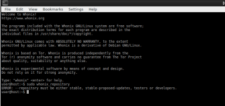

applying
sudo whonix_repository
showing
ERROR --repository must be either stable , stable-proposed-updates , testers or developers.
so when open “whonix repository” or “setup wizard” it shouldnt say “sudo whonix_repository” rather it should say:-
“sudo whonix --repository”
then choose one of these repos
- stable
- testers
- developer
or any form u like …
so the working command is for testers as e.g
sudo whonix --repository testers
